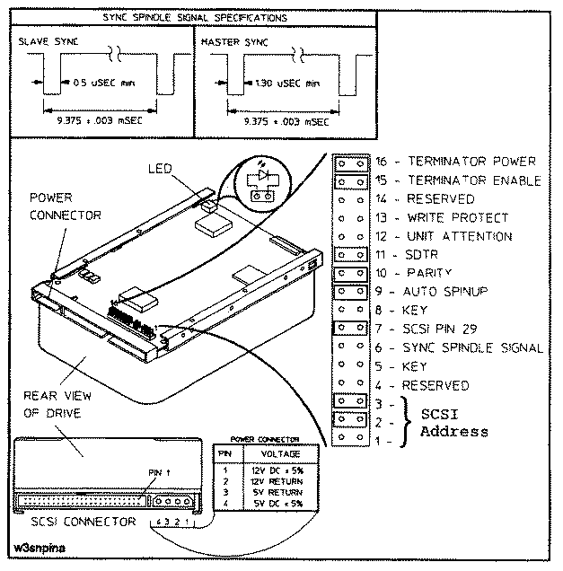

NOTE
Terminator Power and Terminator Enable must both be set open
or must both be jumpered. They must be jumpered if the disk
is the last device on the bus.
NOTE
Terminator Power and Terminator Enable must both be set open
or must both be jumpered. They must be jumpered if the disk
is the last device on the bus.Caution
The driver configuration is set with jumpers on the address/option connector and option connector (see Figure) shows how to the option pin-sets for the A3087A 3.5-inch hard disk drive should be set. A pin-set is shorted with a jumper installed, or open without a jumper.
| Function | Pin-Set | Setting |
| SCSI Address | 1,2,3 | Device Address |
| Reserved | 4 | Open |
| Key (no jumpers) | 5 | |
| Sync Spindle | 6 | Open |
| SCSI Pin 29 | 7 | Jumpered |
| Key (no jumpers) | 8 | |
| Auto Spinup | 9 | Jumpered |
| Parity | 10 | Jumpered |
| SDTR | 11 | Jumpered |
| Unit Attention | 12 | Open |
| Write Protect | 13 | Open |
| Reserved | 14 | Open |
| Terminator Enable | 15 | See Note below. |
| Terminator Power | 16 | See Note below. |
Tabel: Option Settings for A3087A 3.5-inch Hard Disk Drive
NOTE
Terminator Power and Terminator Enable must both be set open
or must both be jumpered. They must be jumpered if the disk
is the last device on the bus.
Jumpered-Terminated, Open-No Termination

Figure 1: C2490AM Single-Ended Drive Connectors